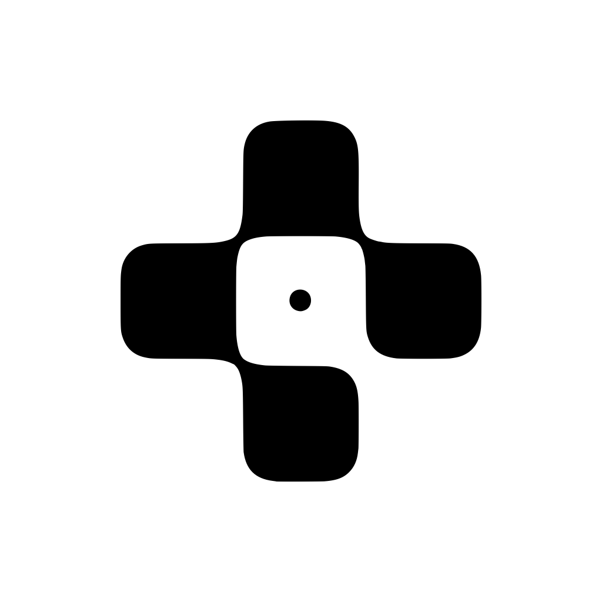
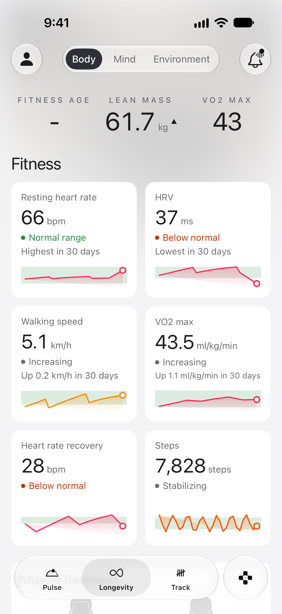
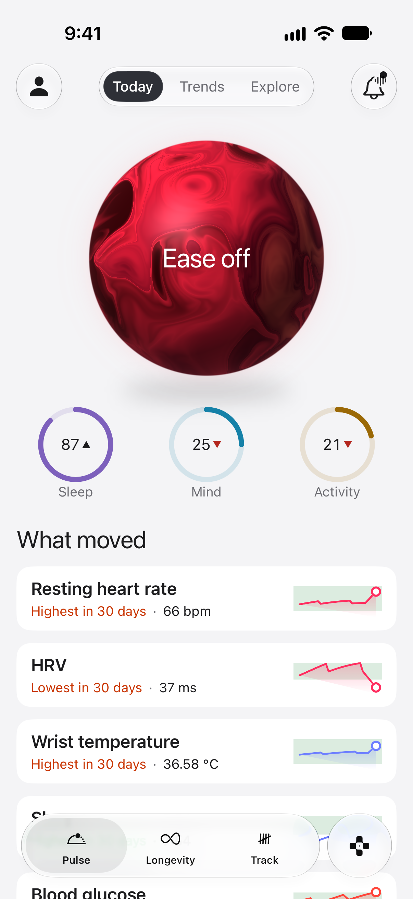

Prism
Open source health app that turns your Apple Health data into five daily scores.
Free · AGPL-3.0 · github.com/soma-intelligence/prism



Open source health app that turns your Apple Health data into five daily scores.